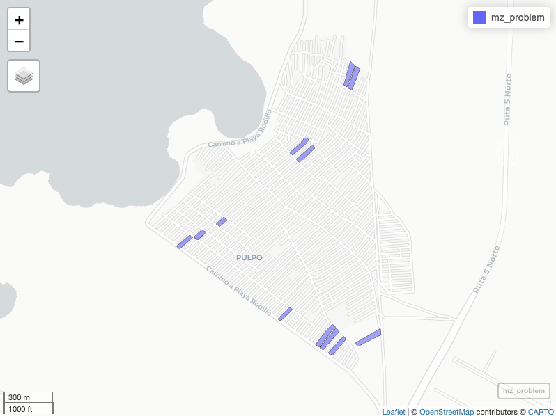
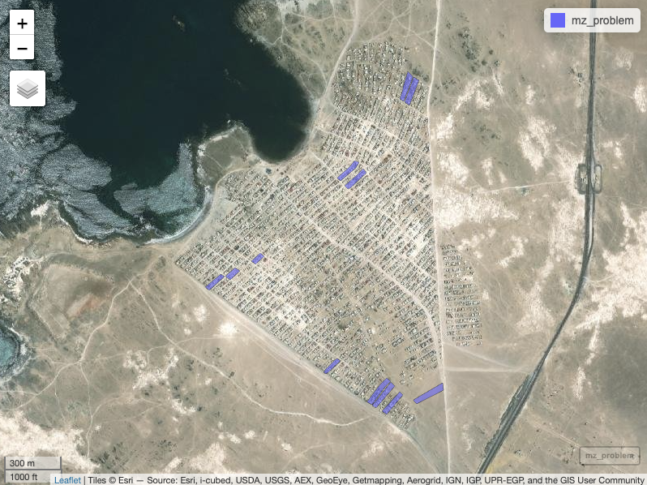
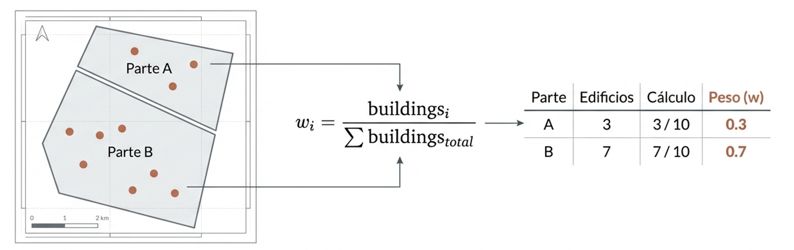
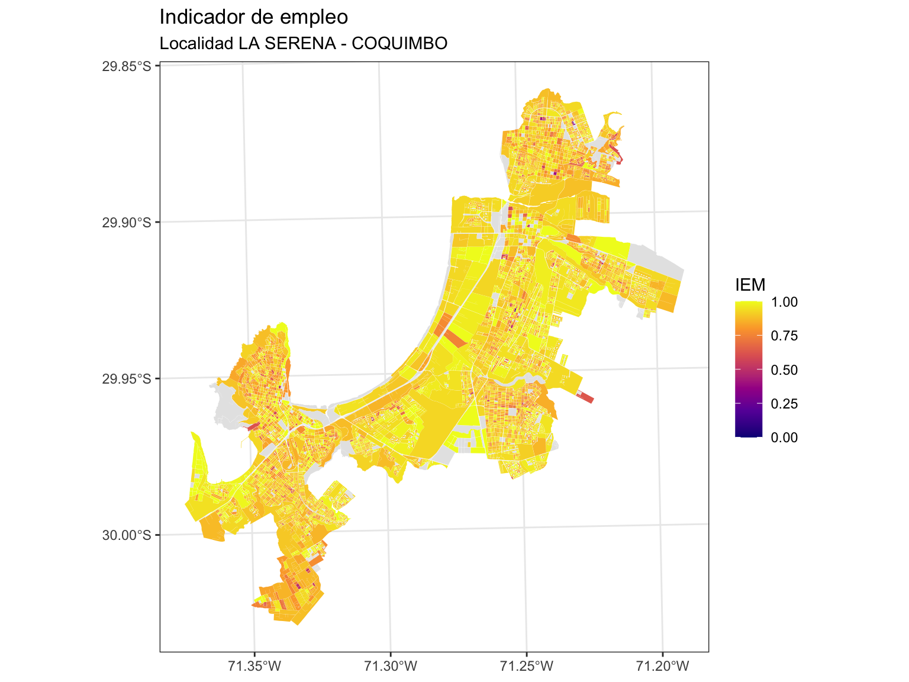
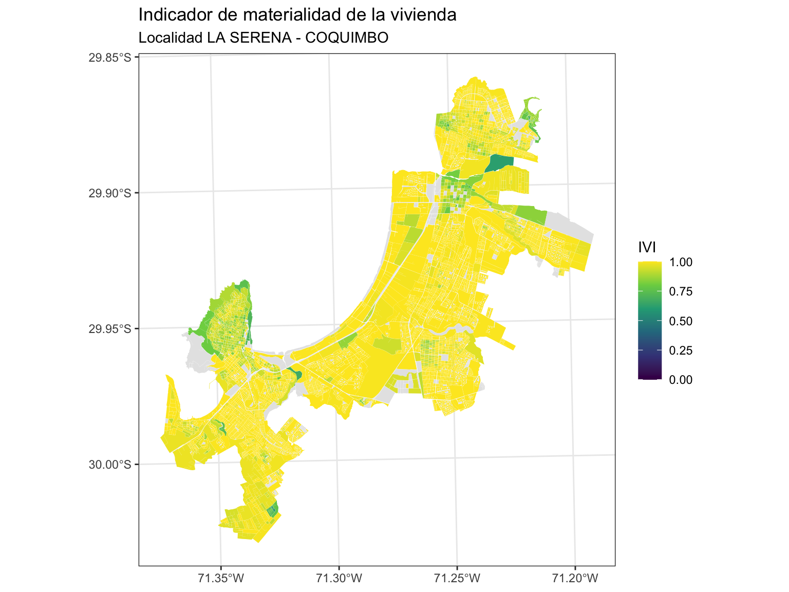
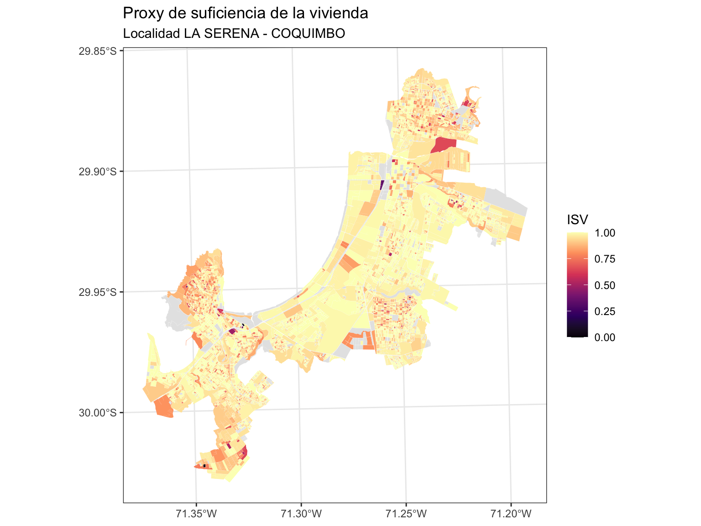
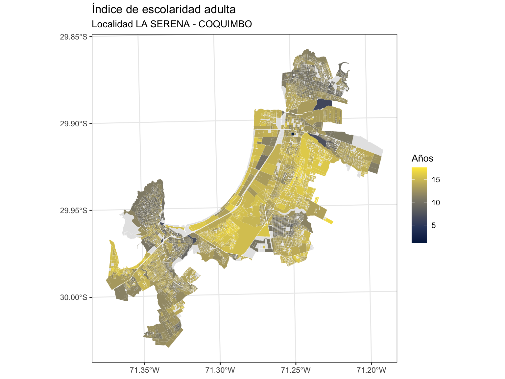
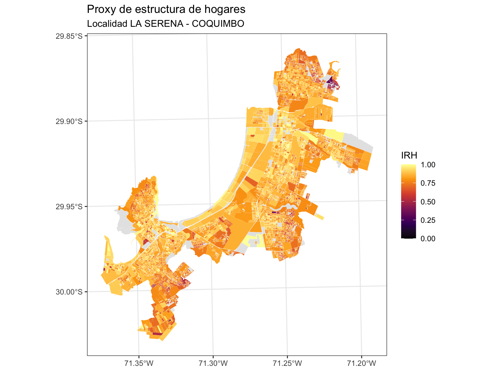

Construcción de indicadores socioeconómicos con el Censo 2024
11.1 Propósito del capítulo
Hasta aquí hemos aprendido a organizar, transformar, representar y analizar datos espaciales. En este capítulo reuniremos esas capacidades para responder una pregunta aplicada: ¿cómo convertir un problema territorial en una medida que pueda compararse entre lugares?
Al finalizar, podrás:
distinguir un indicador general de uno territorial;
reconocer las decisiones conceptuales y técnicas involucradas en su construcción;
comprender por qué fue necesario corregir algunas geometrías censales y cómo se utiliza el ponderador w;
calcular, normalizar y cartografiar indicadores socioeconómicos con datos agregados del Censo 2024; y
diferenciar una medición directa de un proxy y comunicar sus límites de interpretación.
11.2 Conceptos fundamentales
11.2.1 De los datos al indicador
Un indicador es una medida que sintetiza un fenómeno relevante para describir su estado, seguir su evolución o evaluar un resultado. No es un dato aislado: adquiere sentido cuando se vincula con una pregunta, una población de referencia, un periodo y una regla de cálculo.
Un indicador territorial incorpora, además, una unidad geográfica explícita —por ejemplo, una región, una comuna o una manzana—. Esto permite comparar lugares, reconocer desigualdades espaciales y orientar decisiones públicas. Una tasa de desocupación comunal, la distancia al centro de salud más cercano o la proporción de viviendas con materialidad insuficiente son ejemplos de indicadores territoriales.
Un indicador bien definido debe explicitar, al menos:
qué mide y por qué es relevante;
a quiénes o qué unidades representa;
dónde y cuándo es válido;
cómo se calcula, incluidos numerador, denominador y tratamiento de valores faltantes; y
cómo se interpreta, especialmente qué significan sus valores bajos y altos.
La escala también forma parte del indicador
Un patrón observado por región puede cambiar al calcularse por comuna o manzana. Por eso, toda comparación debe usar unidades geográficas y periodos equivalentes. Los resultados describen áreas, no necesariamente a cada persona que vive en ellas; confundir ambos niveles conduce a una falacia ecológica.
11.2.2 Tipos y usos
Los indicadores pueden organizarse según la dimensión territorial que representan. En este curso trabajaremos principalmente con cuatro familias:
Dimensión
Pregunta orientadora
Ejemplos
Accesibilidad
¿Con qué facilidad se llega a servicios y oportunidades?
tiempo de viaje, distancia, cobertura
Socioeconómica
¿Qué condiciones sociales y materiales caracterizan el área?
escolaridad, empleo, vivienda
Seguridad
¿Cómo se distribuyen los riesgos y hechos delictuales?
tasas, concentración, exposición
Ambiental
¿Qué presiones o beneficios ambientales recibe la población?
contaminación, áreas verdes, amenazas
En la práctica, estas medidas apoyan cuatro tareas: diagnosticar brechas actuales, monitorear cambios, comparar escenarios y evaluar políticas o proyectos. El mapa ayuda a comunicar el resultado, pero no reemplaza la definición conceptual ni el análisis.
11.3 Ruta para construir un indicador territorial
La construcción no comienza con una fórmula. Sigue una cadena de decisiones conectadas:
Delimitar el problema. Precisar el fenómeno, la población afectada, el territorio y el periodo de interés.
Establecer un marco de referencia. Revisar conceptos, evidencia y criterios que justifiquen qué aspecto del problema se medirá.
Formular el objetivo. Expresar para qué se utilizará el indicador. Un objetivo claro debe ser específico, medible, alcanzable, relevante y acotado en el tiempo.
Seleccionar los datos. Verificar pertinencia, cobertura, escala, actualidad, consistencia y posibilidad de acceso. La disponibilidad de una variable no basta para justificar su uso.
Definir y calcular la medida. Documentar variables, fórmula, unidad, denominadores, valores faltantes, normalización y dirección del indicador.
Representar el patrón espacial. Elegir una clasificación y una simbología coherentes con la distribución de los datos y con el mensaje que se desea comunicar.
Analizar y validar. Contrastar el resultado con el problema inicial, revisar valores extremos y sensibilidad a las decisiones metodológicas, e identificar límites de interpretación.
Una ficha mínima antes de programar
Antes de escribir código, completa una frase como esta: *Este indicador mide , para , en , durante ; se calcula mediante ___ y un valor alto significa ___.* Si quedan espacios ambiguos, la medida todavía no está suficientemente definida.
11.3.1 Fuentes nacionales frecuentes
La fuente adecuada depende de la pregunta y de la escala. Entre los recursos más utilizados en Chile se encuentran:
Al utilizar encuestas, recuerda que la representatividad estadística limita el nivel territorial al que se pueden producir estimaciones confiables.
11.4 Caso aplicado: dimensión socioeconómica 2024
La Matriz de Bienestar Humano Territorial (MBHT), desarrollada por el Centro de Inteligencia Territorial de la Universidad Adolfo Ibáñez, organiza indicadores en cuatro dimensiones: accesibilidad, ambiente, seguridad y condiciones socioeconómicas. En este ejercicio construiremos una versión pedagógica de la dimensión socioeconómica con variables agregadas del Censo de Población y Vivienda 2024.
Figure 11.1: Dimensiones de la Matriz de Bienestar Humano Territorial
Calcularemos cinco indicadores: empleo, materialidad de la vivienda, suficiencia de la vivienda, escolaridad adulta y estructura de los hogares. Todos se orientarán en la misma dirección: un valor más alto representará una situación relativamente más favorable.
Indicador
Estado con los tabulados 2024
Qué representa
IEM
medición directa
participación de la población activa en el empleo
IVI
medición directa
calidad material de la vivienda
ISV
proxy
suficiencia de la vivienda a partir de señales de hacinamiento
IEA
proxy
escolaridad promedio de la población de 18 años o más
IRH
proxy
señal compuesta de estructura de hogares
IPJ
no calculable
requiere un cruce conjunto de edad, estudio y trabajo no disponible
Qué significa proxy
Un proxy es una medida indirecta: utiliza variables observables relacionadas con un concepto que no puede medirse directamente con los datos disponibles. No debe presentarse como equivalente al fenómeno original. Su nombre, fórmula, universo, supuestos y límites deben acompañar siempre el resultado.
11.4.1 Datos y unidad de análisis
El insumo nacional contiene geometrías censales corregidas y variables agregadas de personas, hogares y viviendas. En este capítulo trabajaremos con la localidad censal LA SERENA - COQUIMBO, perteneciente a la Región de Coquimbo (COD_REGION == "04") y distribuida entre las comunas de Coquimbo y La Serena. En la base, esta unidad se identifica exactamente mediante LOCALIDAD == "LA SERENA - COQUIMBO".
path_censo_2024 <-"../sesiones/data/censo-2024/censo_2024_nacional.gpkg"if (!file.exists(path_censo_2024)) {stop("No se encontró el insumo 2024 en: ", path_censo_2024)}data_nac <-st_read(path_censo_2024, quiet =TRUE)reg <-"04"comunas_estudio <-c("COQUIMBO", "LA SERENA")localidad <-"LA SERENA - COQUIMBO"data_reg <- data_nac %>%filter( COD_REGION == reg, COMUNA %in% comunas_estudio, LOCALIDAD == localidad )if (nrow(data_reg) ==0) {stop("No se encontraron geometrías para la localidad: ", localidad)}cat("Geometrías de la localidad", localidad, ":", nrow(data_reg), "\n")
Geometrías de la localidad LA SERENA - COQUIMBO : 7310
Geometrías censales de la localidad LA SERENA - COQUIMBO por comuna
COMUNA
n_geometrias
COQUIMBO
4003
LA SERENA
3307
11.5 Corrección geométrica y ponderador w
11.5.1 ¿Por qué fue necesaria la corrección?
En el insumo censal se identificaron casos en los que un mismo ID estaba asociado a más de un polígono. Algunas geometrías multipartes representan una unidad espacial coherente; otras contienen partes físicamente separadas que necesitan tratarse como polígonos independientes para evitar errores de visualización, agregación e interpretación.


Figure 11.2: Manzanas que comparten el mismo número de identificación.
Cuando una unidad se separa, sus atributos no pueden copiarse íntegramente a cada nueva parte, porque eso duplicaría personas, hogares y viviendas. La corrección geométrica asigna un identificador derivado a cada parte y calcula un peso de redistribución w.
11.5.2 ¿Cómo se obtiene w?
La huella construida se utiliza como evidencia de ocupación. Para cada parte geométrica se calcula el número o el área de las edificaciones contenidas. El peso de la parte i se expresa como:

w_i =
\frac{\text{medida de edificaciones en la parte } i}
{\sum_j \text{medida de edificaciones de las partes del mismo ID}}
La medida principal puede ser el área construida o el conteo de edificaciones, según la configuración del proceso. Si no existe evidencia construida suficiente, se utiliza un método de respaldo basado en el área del terreno o en una distribución uniforme.
Para los IDs efectivamente redistribuidos se debe cumplir:
\sum_i w_i = 1
De esta forma, una variable absoluta x se asigna a cada parte mediante:
x_i = x \times w_i
11.5.3 ¿A qué variables se aplica?
El peso se aplica a conteos absolutos, como número de personas, hogares o viviendas. No se aplica a promedios ya calculados, como prom_escolaridad18. Además:
w = 1 indica que el registro conserva el valor completo;
0 < w < 1 indica que el atributo se redistribuye proporcionalmente; y
w = 0 es válido para una parte que no recibe atributos después de la redistribución.
Cuando un indicador es una razón y el mismo w se aplica al numerador y al denominador, el peso se cancela algebraicamente:
Esto significa que w preserva la consistencia de los conteos, pero no crea por sí solo variación interna en las proporciones de las partes derivadas de una misma unidad.
Dos pesos diferentes
En este capítulo aparecen dos símbolos que no deben confundirse: w es el peso geométrico de redistribución incluido en la base; w_hac = 2 es una ponderación conceptual de criticidad usada únicamente en el proxy de suficiencia de la vivienda.
11.5.4 Validación y aplicación
Definimos tres funciones breves para evitar divisiones por cero, acotar proporciones y normalizar los indicadores.
Si la población activa es cero, el indicador no está definido y se registra como NA.
censo <- censo %>%mutate(CESA_DENS =proporcion_segura( n_desocupado, n_desocupado + n_ocupado ),IEM =1-acotar_01(CESA_DENS) )
ggplot(censo) +geom_sf(aes(fill = IEM), color =NA) +scale_fill_viridis_c(option ="C",limits =c(0, 1),na.value ="grey90",name ="IEM" ) +labs(title ="Indicador de empleo",subtitle ="Localidad LA SERENA - COQUIMBO" ) +theme_bw()

Indicador de empleo en la localidad LA SERENA - COQUIMBO
11.6.2 IVI — Indicador de materialidad de la vivienda
El IVI sintetiza carencias de materialidad en paredes, techo y piso. Cada componente se calcula sobre el total de viviendas particulares y luego se invierte para que un valor alto represente una mejor condición material.
Variables
Paredes: n_mat_paredes_tabique_sin_forro, n_mat_paredes_artesanal y n_mat_paredes_precarios.
Techo: n_mat_techo_fonolita, n_mat_techo_precarios y n_mat_techo_sin_cubierta.
Piso: n_mat_piso_capa_cemento y n_mat_piso_tierra.
Denominador: n_vp, total de viviendas particulares.
ggplot(censo) +geom_sf(aes(fill = IVI), color =NA) +scale_fill_viridis_c(option ="D",limits =c(0, 1),na.value ="grey90",name ="IVI" ) +labs(title ="Indicador de materialidad de la vivienda",subtitle ="Localidad LA SERENA - COQUIMBO" ) +theme_bw()

Indicador de materialidad de la vivienda en la localidad LA SERENA - COQUIMBO
11.6.3 ISV — Proxy de suficiencia de la vivienda
El ISV aproxima la suficiencia habitacional mediante dos señales de hacinamiento: viviendas hacinadas y núcleos hacinados o allegados. No observa una escala directa de severidad; por eso se construye un puntaje de criticidad y se clasifica como proxy.
Variables
n_viv_hacinadas: viviendas hacinadas.
n_vp_ocupada: viviendas particulares ocupadas.
n_nucleos_hacinados_allegados: núcleos hacinados o allegados.
Utilizamos w_{hac}=2 para representar una mayor criticidad del segundo componente. Luego normalizamos el puntaje dentro de la localidad LA SERENA - COQUIMBO y cambiamos su dirección:
ggplot(censo) +geom_sf(aes(fill = ISV), color =NA) +scale_fill_viridis_c(option ="A",limits =c(0, 1),na.value ="grey90",name ="ISV" ) +labs(title ="Proxy de suficiencia de la vivienda",subtitle ="Localidad LA SERENA - COQUIMBO" ) +theme_bw()

Proxy de suficiencia de la vivienda en la localidad LA SERENA - COQUIMBO
Alcance del ISV
El valor depende de dos decisiones: el peso operacional w_{hac}=2 y los extremos observados en la localidad estudiada. Si cambia el peso o el universo territorial, cambia también el indicador. Debe interpretarse como una posición relativa de suficiencia habitacional dentro de la localidad LA SERENA - COQUIMBO.
11.6.4 IEA — Índice de escolaridad adulta
El insumo agregado permite observar prom_escolaridad18, el promedio de escolaridad de la población de 18 años o más. Esta medida describe el capital educacional adulto del territorio, no una característica exclusiva de las jefaturas de hogar.
En versiones anteriores del Censo (2017) se utilizaba la sigla IEJ, correspondiente al Índice de Escolaridad del Jefe de Hogar. Como la variable disponible representa a toda la población de 18 años o más y no solamente a las jefaturas, el indicador pasa a llamarse IEA: Índice de Escolaridad Adulta. El cálculo no cambia; cambia el nombre para representar correctamente lo que miden los datos.
Variables
prom_escolaridad18: promedio de años de escolaridad de la población de 18 años o más.
n_per: población total, utilizada para identificar entidades sin población.
IEA = prom_{escolaridad18}, \qquad n_{per} > 0
censo <- censo %>%mutate(IEA =if_else(n_per >0, prom_escolaridad18, NA_real_) )
ggplot(censo) +geom_sf(aes(fill = IEA), color =NA) +scale_fill_viridis_c(option ="E",na.value ="grey90",name ="Años" ) +labs(title ="Índice de escolaridad adulta",subtitle ="Localidad LA SERENA - COQUIMBO" ) +theme_bw()

Índice de escolaridad adulta en la localidad LA SERENA - COQUIMBO
Alcance del IEA
El indicador representa una media poblacional adulta. No permite inferir la escolaridad de cada hogar ni atribuir el mismo nivel educacional a todas las personas de la unidad territorial.
11.6.5 IRH — Proxy de estructura de hogares
El IRH combina la proporción de hogares con jefatura femenina y la proporción de hogares con menores. La multiplicación representa una co-ocurrencia esperada entre ambas señales; no identifica directamente qué hogares cumplen simultáneamente las dos condiciones.
censo <- censo %>%mutate(prop_jefatura_mujer =proporcion_segura(n_jefatura_mujer, n_hog),prop_hog_menores =proporcion_segura(n_hog_menores, n_hog),score_irh =acotar_01(prop_jefatura_mujer) *acotar_01(prop_hog_menores),IRH =1- score_irh )
ggplot(censo) +geom_sf(aes(fill = IRH), color =NA) +scale_fill_viridis_c(option ="B",limits =c(0, 1),na.value ="grey90",name ="IRH" ) +labs(title ="Proxy de estructura de hogares",subtitle ="Localidad LA SERENA - COQUIMBO" ) +theme_bw()

Proxy de estructura de hogares en la localidad LA SERENA - COQUIMBO
Alcance ético y analítico del IRH
La jefatura femenina no constituye por sí misma una carencia. Este proxy tampoco observa monoparentalidad, redes de apoyo, ingresos o capacidad de cuidado. No debe utilizarse para clasificar hogares individuales ni para estigmatizar tipos de familia; su validez debe evaluarse mediante triangulación con otras fuentes.
11.6.6 Por qué no se calcula IPJ
Un indicador de participación juvenil requiere identificar a quienes cumplen simultáneamente condiciones de edad, asistencia educativa y situación laboral. Los tabulados agregados disponibles contienen marginales separados —por ejemplo, población por tramo de edad, asistencia y ocupación—, pero no la intersección entre ellos.
Conocer cuántas personas son jóvenes, cuántas estudian y cuántas trabajan no permite saber cuántas personas jóvenes no estudian ni trabajan al mismo tiempo. El numerador es estadísticamente no identificable con estas marginales. Construirlo mediante sumas o restas produciría una cifra no sustentada; por ello, IPJ se excluye de forma explícita.
11.7 Construcción de la dimensión socioeconómica 2024
Los cinco indicadores disponibles utilizan escalas distintas. Para otorgarles un rango común, normalizamos cada uno al intervalo [0,1] utilizando como universo la localidad LA SERENA - COQUIMBO. La dimensión final es el promedio simple de los cinco indicadores normalizados y solo se calcula cuando todos están disponibles.
La dimensión sintetiza únicamente los cinco indicadores calculables con el insumo 2024. Cada uno recibe el mismo peso. Esta es una decisión pedagógica y debe documentarse si el resultado se reutiliza fuera del curso.
GeoPackage conserva la geometría, los nombres de campos y los tipos de datos en un único archivo. El bloque se deja sin ejecutar para evitar sobrescribir resultados durante la publicación del libro.
Construir un indicador territorial implica mantener una cadena de coherencia entre el problema, la geometría, las variables, la fórmula y la interpretación. En este caso, la corrección geométrica evita duplicar atributos cuando una unidad se redistribuye entre partes, mientras que w conserva la consistencia de los conteos asignados.
Los resultados deben leerse considerando cinco límites:
Temporalidad: describen las condiciones observadas por el Censo 2024.
Escala: caracterizan unidades censales, no personas u hogares individuales.
Redistribución:w distribuye conteos, pero no añade información socioeconómica nueva dentro de una unidad original.
Proxies:ISV, IEA e IRH son aproximaciones indirectas con supuestos explícitos.
Normalización: el ISV y la dimensión sintética dependen del universo formado por la localidad LA SERENA - COQUIMBO utilizado para calcular mínimos y máximos.
El producto final no es solo una columna nueva ni un mapa: es una medida documentada, reproducible y defendible.